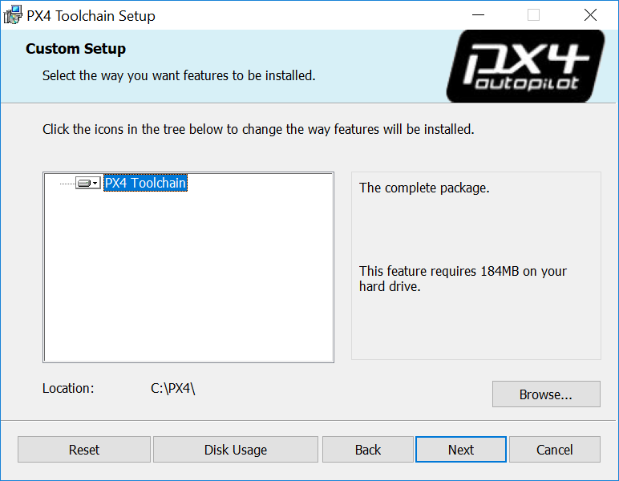

Windows Cygwin Toolchain
Ready to use MSI Installer Download
Latest Download:
- PX4 Windows Cygwin Toolchain 0.2 Download (09.05.2018)
Legacy Versions (deprecated):
- PX4 Windows Cygwin Toolchain 0.1 Download (23.02.2018)
Support / Known Problems
Tested and working:
- Building and running SITL with jMAVsim, generates a native windows binary px4.exe and has a lot better prformance than a VM
- Building and uploading NuttX builds like px4fmu-v2 and px4fmu-v4
- Style check with astyle with the command make format
- Command line auto completion
- The installer does NOT screw up your system and global path, it only modifies the selected installation directory e.g.
C:\PX4\and uses a temporary local path - The installer supports updating to a new version keeping your personal changes inside the toolchain folder
Known problems / Report your issue
Installation Instructions
- Download the latest version of the ready to use MSI installer above
- Run it, choose your desired installation location, let it install 
- Make sure to tick the box in the end of the installation to clone the PX4 repository, build and run simulation with jMAVsim this simplifies the process to get you started.
Don't worry if you missed the opportunity or the script failed (e.g. because you didn't have a working internet connection). You can also do that step manually on the console afterwards.
Usage Instructions
After the installation when you browse to the directory you installed the toolchain to (default C:\PX4\) you'll find the following batch scripts which start up a console/terminal or different IDEs inside the Cygwin toolchain environment:
run-console.batTo start the POSIX (linux like) bash console.
run-eclipse.batTo start the as of Toolchain version 0.2 built in portable eclipse for C++ IDE.
run-vscode.batTo start the not included Visual Studio Code IDE from its default install directory
C:\Program Files\Microsoft VS Code
Further details on why you need to use the scripts and how it all works explained below.
You can create desktop shortcuts to the batch scripts to have easier access, the installer as of toolchain version 0.2 does not yet create them for you.
The ordinary workflow consists of starting a console window by douple clicking on the run-console.bat script to manually run terminal commands and starting your favorite IDE with its corresponding run-XXX.bat script to edit code and possibly also run builds.
Getting Started
Ticking the box to clone and run simulation at the end of the installer opens the Cygwin console and runs the following commands:
# clones PX4 repository into the home folder & loads submodules in parallel
git clone --recursive -j8 https://github.com/PX4/Firmware.git
# switches into the Firmware repository folder
cd Firmware
# builds and runs SITL simulation with jMAVSim to test the setup
make posix jmavsim
Cloning only needs to be done once, if you ticked the box to clone at the installer or just updated your toolchain it's already done and you can skip the fist command.

Continue at this stage with the detailed instructions on how to build PX4.
Windows & Git Special Cases
Windows CR+LF vs Unix LF Line Endings
It is recommended that you force unix style LF endings for every repository you're working with using this Toolcahin and use an editor which preserves them when saving your changes like eclipse or VS Code.
Compilation of source files also works with CR+LF endings checked out locally but there are cases in Cygwin like execution of shell scripts that require unix line endings otherwise you get errors like $'\r': Command not found..
Luckily git can do this for you when you execute the two commands in the root directory of your repo:
git config core.autocrlf false
git config core.eol lf
If you work with this Toolchain on multiple repositories you can also set these two configurations globally for your machine by git config --global ... but this will apply system wide and hence also in other unrelated git usages on your Windows and is not recommended.
Unix permissions execution bit
Under unix there's a flag in the permissions of each file which tells the OS if the file is allowed to be executed or not. Windows has a different permission system and no such bit but git especially under cygwin supports and cares about that bit. This often results in git finding difffereces in permissions even if there is no real diff which looks like this:
diff --git ...
old mode 100644
new mode 100755
It's recommended to disable this functionality by executing git config core.fileMode false in every repo you use with this toolchain.
Shell Script installation
- Make sure you have Git for Windows installed. You can get it from https://git-scm.com/download/win.
- Clone the repository https://github.com/MaEtUgR/PX4Toolchain to the location you want to install the toolchain. Default location and naming is achieved by opening the
Git Bashand executing:cd /c/ git clone https://github.com/MaEtUgR/PX4Toolchain PX4 - If you want to install all components navigate to the freshly cloned folder and double click on the script
install-all-components.batlocated in the foldertoolchain. If you only need certain components and want to safe internet traffic and or disk space you can navigate to the different component folders like e.g.toolchain\cygwin64and click on theinstall-XXX.batscripts to only fetch something specific. - Continue with Usage Instructions and Getting Started
Manual Installation (for Toolchain Developers)
This section describes how to setup the Cygwin toolchain manually yourself while pointing to the corresponding scripts from the script based installation repo. The result should be the same as using the scripts or MSI installer.
The Toolchain gets maintained and hence these instructions might not cover every detail of all the future changes.
- Create the folders
C:\PX4\,C:\PX4\toolchain\andC:\PX4\home\ - Download the Cygwin installer file setup-x86_64.exe from the official Cygwin website
- Run the downloaded setup file
- In the wizard choose to install into the folder
C:\PX4\toolchain\cygwin64\ Select to install the default Cygwin base and the newest available version of the following additional packages:
- Category:Packagename
- Devel:cmake (3.3.2 gives no deprecated warnings, 3.6.2 works but has the warnings)
- Devel:gcc-g++
- Devel:git
- Devel:make
- Devel:ninja
- Devel:patch
- Editors:xxd
- Editors:nano (unless you're the vim pro)
- Python:python2
- Python:python2-pip
- Python:python2-numpy
- Python:python2-jinja2
- Archive:unzip
- Utils:astyle
- Shells:bash-completion
Web:wget
Do not select as many packages as possible which are not on this list, there are some which conflict and break the builds.
That's what cygwin64/install-cygwin-px4.bat does.
Write up or copy the batch scripts
run-console.batandsetup-environment-variables.bat.The reason to start all the development tools through the prepared batch scripts is they preconfigure the starting program to use the local, portable Cygwin environment inside the toolchain's folder. This is done by always first calling the script
setup-environment-variables.batand the desired application like the console after that.The script
setup-environment-variables.batlocally sets environmental variables for the workspace root directoryPX4_DIR, all binary locationsPATH, and the home directory of the unix environmentHOME.Add necessary python packages to your setup by opening the Cygwin toolchain console (double clicking
run-console.bat) and executingpip2 install toml pip2 install pyserial pip2 install pyulogThat's what cygwin64/install-cygwin-python-packages.bat does.
Download the ARM GCC compiler as zip archive of the binaries for Windows and unpack the content to the folder
C:\PX4\toolchain\gcc-arm.That's what gcc-arm/install-gcc-arm.bat does.
- Download the Java Development Kit Installer.
- Because sadly there is no portable archive containing the binaries directly you have to install it.
- Find the binaries and move/copy them to
C:\PX4\toolchain\jdk. You can uninstall the Kit from your Windows system again, we only needed the binaried for the toolchain.
That's what jdk/install-jdk.bat does.
Download Apache Ant as zip archive of the binaries for Windows and unpack the content to the folder
C:\PX4\toolchain\apache-ant.Make sure you don't have an additional folder layer from the folder which is inside the downloaded archive.
That's what apache-ant/install-apache-ant.bat does.
Download, build and add genromfs to the path:
Clone the source code to the folder
C:\PX4\toolchain\genromfs\genromfs-srcwithcd /c/toolchain/genromfs git clone https://github.com/chexum/genromfs.git genromfs-srccompile it with
cd genromfs-src make allCopy the resulting binary
genromfs.exeone folder level out toC:\PX4\toolchain\genromfsThat's what genromfs/install-genromfs.bat does.
Make sure all the binary folders of all the isntalled components are correctly listed in the
PATHvariable configured bysetup-environment-variables.bat.